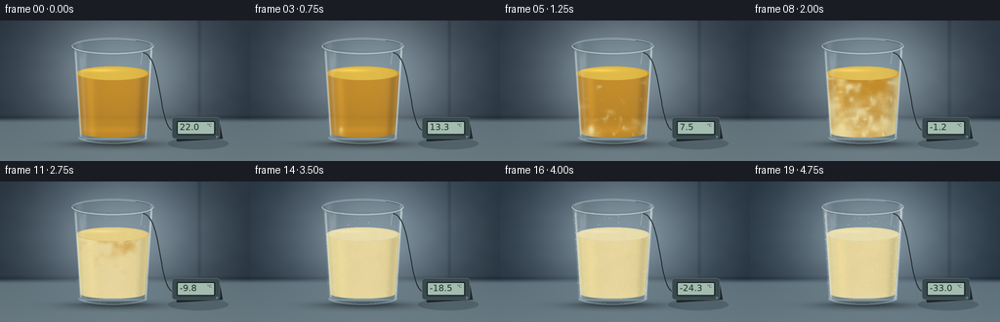
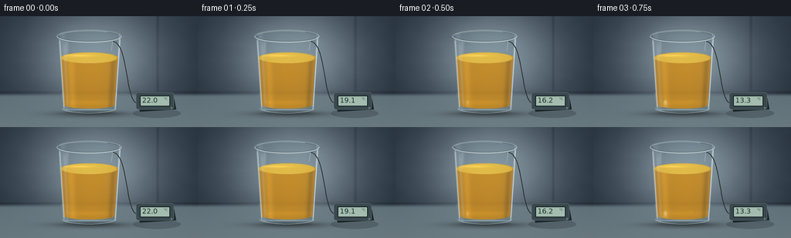

CODING AGENTS AS PIXEL WORLD MODELS
traex/GPT-6.1-Sol · phygen_094
点击播放 · 原生 RGB 像素
逐轮保存的候选
回放视频、检查图与代码变化。
每份候选均可单独播放。实际图片检查记录在下方工具轨迹中。
候选 01播放与检查图
点击播放 · 原生 RGB 像素
展开代码变化
--- 上一保存版本
+++ 本次保存版本
@@ -0,0 +1,229 @@
+"""Procedural, text-only oil cooling timelapse. No external assets."""
+from pathlib import Path
+import numpy as np
+from PIL import Image, ImageDraw, ImageFilter, ImageFont
+from artifact_io import save
+
+ROOT=Path(__file__).resolve().parent
+W,H,S=256,144,4
+WW,HH=W*S,H*S
+rng=np.random.default_rng(942)
+y,x=np.mgrid[0:HH,0:WW].astype(np.float32)
+x/=S;y/=S
+
+def smooth(a,b,v):
+ q=np.clip((v-a)/(b-a),0,1)
+ return q*q*(3-2*q)
+
+def noisegrid(gw,gh,seed):
+ rr=np.random.default_rng(seed)
+ im=Image.fromarray((rr.random((gh,gw))*255).astype('uint8'))
+ return np.asarray(im.resize((WW,HH),Image.Resampling.BICUBIC),dtype=np.float32)/255
+
+coarse=noisegrid(20,14,30)
+mid=noisegrid(53,32,31)
+fine=noisegrid(190,105,32)
+micro=noisegrid(560,320,33)
+noise=0.57*coarse+0.29*mid+0.14*fine
+
+# Defocused, softly illuminated refrigerated workbench.
+bg=np.zeros((HH,WW,3),np.float32)
+light=np.exp(-((x-125)/88)**2-((y-55)/70)**2)
+for c,(a,b) in enumerate([(36,100),(47,106),(58,105)]):
+ bg[:,:,c]=a+b*light
+bg+=((coarse-.5)*2.5)[...,None]
+# Very soft structural seams in the chamber wall.
+seam=np.exp(-((x-204)/1.8)**2)* (1-smooth(91,105,y))
+bg-=seam[...,None]*np.array([12,12,12])
+seam2=np.exp(-((y-99)/1.8)**2)
+bg-=seam2[...,None]*np.array([8,9,10])
+bench=smooth(99,105,y)
+benchcolor=np.stack([95+24*light+0.22*(y-105),111+26*light+0.21*(y-105),119+27*light+0.18*(y-105)],axis=2)
+bg=bg*(1-bench[...,None])+benchcolor*bench[...,None]
+brushed=(np.sin(y*12.3)+np.sin(y*28.4))*.30
+bg+=brushed[...,None]*bench[...,None]
+# A diffuse contact shadow, not a floating vessel.
+shadow=np.exp(-((x-119)/47)**2-((y-127)/4.0)**2)
+bg*=1-shadow[...,None]*.38
+shadow2=np.exp(-((x-116)/32)**2-((y-126)/1.6)**2)
+bg*=1-shadow2[...,None]*.24
+
+cx=115.5;yt=26.;yb=119.
+rad=41.8-6.4*np.clip((y-yt)/(yb-yt),0,1)
+u=(x-cx)/rad
+# Cylinder with elliptic lip and heavy rounded base.
+body=((abs(u)<1)&(y>=yt)&(y<=yb))
+upper=(((x-cx)/41.8)**2+((y-yt)/8.1)**2<1)
+lower=(((x-cx)/35.4)**2+((y-yb)/7.1)**2<1)
+glassmask=(body|upper|lower).astype(float)
+oil_y=54.0; oil_bottom=115.0
+irad=rad-2.6
+ui=(x-cx)/irad
+liquid_side=(abs(ui)<1)&(y>=oil_y)&(y<=oil_bottom)
+liquid_top=(((x-cx)/37.35)**2+((y-oil_y)/7.2)**2<1)
+liquid_bottom=(((x-cx)/33.0)**2+((y-oil_bottom)/5.0)**2<1)
+liquidmask=(liquid_side|liquid_top|liquid_bottom).astype(float)
+# Rounded optical material fields.
+path=np.sqrt(np.clip(1-ui**2,0,1))
+edge=np.clip(abs(u),0,1)
+# Different nucleation times: colder glass walls and bottom seed first.
+vertical=np.clip((y-55)/64,0,1)
+onset=.41-.18*vertical-.12*np.clip(abs(ui),0,1)**3 + .20*(noise-.5)
+# Seed mottling gives many distinct cloudy islands, not a moving liquid fill line.
+rr=np.random.default_rng(59)
+seedfield=np.zeros((HH,WW),np.float32)
+for k in range(52):
+ sx=rr.uniform(79,152);sy=rr.uniform(54,117)
+ rx=rr.uniform(1.0,4.5);ry=rr.uniform(1.3,5.0)
+ seedfield+=rr.uniform(.05,.12)*np.exp(-((x-sx)/rx)**2-((y-sy)/ry)**2)
+onset-=seedfield
+
+# Stable tiny condensate positions and frost dendrites.
+drops=[]
+for i in range(120):
+ xx=rr.uniform(76,155);yy=rr.uniform(32,117)
+ if abs((xx-cx)/(41.8-6.4*(yy-yt)/(yb-yt)))<.98:
+ drops.append((xx,yy,rr.uniform(.18,.62),rr.uniform(.38,.90)))
+frost=[]
+for i in range(170):
+ yy=rr.uniform(30,123)
+ side=rr.choice([-1,1]); r=41.8-6.4*np.clip((yy-yt)/(yb-yt),0,1)
+ xx=cx+side*r*rr.uniform(.86,.98)
+ frost.append((xx,yy,rr.uniform(.6,2.4),rr.uniform(.6,1.0),rr.uniform(-.8,.8)))
+
+fontpath='/usr/share/fonts/truetype/dejavu/DejaVuSans.ttf'
+font=ImageFont.truetype(fontpath,9*S)
+smallfont=ImageFont.truetype(fontpath,4*S)
+
+def line(d,coords,fill,width=1):
+ d.line([(int(a*S),int(b*S)) for a,b in coords],fill=fill,width=max(1,int(width*S)),joint='curve')
+def ellipse(d,box,fill=None,outline=None,width=1):
+ d.ellipse(tuple(int(v*S) for v in box),fill=fill,outline=outline,width=max(1,int(width*S)))
+def rect(d,box,fill,r=0,outline=None,width=1):
+ d.rounded_rectangle(tuple(int(v*S) for v in box),radius=int(r*S),fill=fill,outline=outline,width=max(1,int(width*S)))
+
+def frame(i):
+ t=i/19
+ cold=smooth(.12,1,t)
+ image=bg.copy()
+ # A little colder room light; the change is predominantly within the oil.
+ image[:,:,0]-=2.5*cold
+ image[:,:,2]+=2.0*cold
+ # Curved glass distorts the environment behind it.
+ samplex=np.clip(((cx+(x-cx)*(.83+.26*edge**2))*S).astype(int),0,WW-1)
+ sampley=np.clip(((y+1.4*edge**2)*S).astype(int),0,HH-1)
+ refr=bg[sampley,samplex]
+ glasscol=refr*.93+np.array([6,9,10])
+ glasscol+= (np.exp(-((u+.84)/.09)**2)*14+np.exp(-((u-.94)/.026)**2)*34)[...,None]
+ image=image*(1-glassmask[...,None])+glasscol*glassmask[...,None]
+
+ # Beer-Lambert transmission through initially clear, warm golden oil.
+ extinction=np.array([.07,.35,1.42])
+ trans=np.exp(-path[...,None]*extinction)
+ transmitted=(refr+np.array([54,42,17]))*trans
+ # Golden source behind the oil and broad bottle-like optical caustics.
+ gold=np.stack([177+30*path,111+33*path,27+18*path],axis=2)
+ clear=transmitted*.36+gold*.64
+ clear+=np.exp(-((ui+.65)/.13)**2)[...,None]*np.array([19,14,4])
+ clear-=np.exp(-((ui-.84)/.10)**2)[...,None]*np.array([25,18,5])
+ clear+=(np.exp(-((y-112)/3.7)**2)*path)[...,None]*np.array([14,9,1])
+
+ # Wax crystals nucleate, diffuse into clouds, then form an opaque oil gel.
+ cloud=smooth(onset,onset+.30,t)
+ # Very early cloudy flecks while the surrounding oil remains transparent.
+ crystal=smooth(onset+.04,onset+.37,t)
+ matte=np.stack([218+15*path,202+15*path,137+25*path],axis=2)
+ shade=4*(noise-.5)+1.8*(fine-.5)+.8*(micro-.5)
+ matte+=shade[...,None]
+ matte-=np.exp(-((ui-.85)/.10)**2)[...,None]*np.array([16,13,6])
+ matte+=np.exp(-((ui+.66)/.17)**2)[...,None]*np.array([8,8,5])
+ oily=clear*(1-cloud[...,None]*.96)+matte*cloud[...,None]*.96
+ granules=smooth(.61,.90,fine)*smooth(.67,.93,mid)
+ oily+=((granules-.065)*4.2*crystal)[...,None]*np.array([1.,1.,.8])
+ image=image*(1-liquidmask[...,None])+oily*liquidmask[...,None]
+
+ # Horizontal elliptical oil surface, glossy when warm and granular when cold.
+ surf=liquid_top.astype(float)
+ sp=((x-cx)/37.35)**2+((y-oil_y)/7.2)**2
+ surfc=smooth(.32,.77,t)+.04*(noise-.5)
+ surfc=np.clip(surfc,0,1)
+ surf_clear=np.stack([213+12*path,169+18*path,61+12*path],axis=2)
+ surf_matte=np.stack([231+2*path,219+2*path,170+3*path],axis=2)
+ surface=surf_clear*(1-surfc[...,None])+surf_matte*surfc[...,None]
+ surface+=((mid-.5)*2.5*surfc)[...,None]
+ # Reflection of the softbox on the rear of the meniscus.
+ surface+= (np.exp(-((x-102)/19)**2-((y-51.0)/1.5)**2)*(1-.72*surfc))[...,None]*np.array([28,26,16])
+ image=image*(1-surf[...,None])+surface*surf[...,None]
+ meniscus=np.exp(-((np.sqrt(sp)-.97)/.018)**2)*surf
+ image-=meniscus[...,None]*np.array([29,28,18])*(1-.55*cold)
+
+ # Dielectric reflections, layered over the internal material.
+ gleft=np.exp(-((u+.925)/.025)**2)*smooth(27,34,y)*(1-smooth(116,122,y))
+ gleft2=np.exp(-((u+.79)/.045)**2)*smooth(30,41,y)*(1-smooth(110,121,y))
+ gright=np.exp(-((u-.956)/.016)**2)*smooth(27,32,y)*(1-smooth(116,122,y))
+ refl=np.clip(.59*gleft+.15*gleft2+.75*gright,0,.85)*glassmask
+ image=image*(1-refl[...,None])+np.array([222,234,235])*refl[...,None]
+ # Broad soft reflection high on the empty part of the glass.
+ broad=np.exp(-((x-86.5)/2.1)**2)*smooth(30,35,y)*(1-smooth(43,58,y))*.18
+ image=image*(1-broad[...,None])+np.array([240,244,240])*broad[...,None]
+ # Thick heavy base with realistic soft caustics and inner shadow.
+ base=((abs((x-cx)/35.4)<1)&(y>118)&(y<124)).astype(float)
+ baselight=np.exp(-((y-121.2)/.8)**2)*np.sqrt(np.clip(1-((x-cx)/36)**2,0,1))*base
+ image+=baselight[...,None]*np.array([39,46,48])
+ bottomshade=np.exp(-((y-125.1)/.38)**2)*np.sqrt(np.clip(1-((x-cx)/35)**2,0,1))
+ image-=bottomshade[...,None]*np.array([23,24,23])
+ # Exterior frost is mostly confined to cold glass edges, not giant water-ice cubes.
+ frostprogress=smooth(.58,1,t)
+ frosthaze=frostprogress*(.20*np.exp(-((abs(u)-.935)/.065)**2)+.075*np.exp(-((y-117)/4.0)**2))*glassmask
+ image=image*(1-frosthaze[...,None])+np.array([225,234,230])*frosthaze[...,None]
+ img=Image.fromarray(np.uint8(np.clip(image,0,255))).convert('RGBA')
+ overlay=Image.new('RGBA',(WW,HH),(0,0,0,0));d=ImageDraw.Draw(overlay)
+ # Fine lip: dark rear rim and bright front rim, elliptical opening remains empty.
+ ellipse(d,(cx-41.8,yt-8.1,cx+41.8,yt+8.1),outline=(188,205,207,170),width=.65)
+ ellipse(d,(cx-39.6,yt-6.4,cx+39.6,yt+6.4),outline=(34,48,49,125),width=.45)
+ d.arc(tuple(int(v*S) for v in (cx-41.8,yt-8.1,cx+41.8,yt+8.1)),0,180,fill=(230,239,238,220),width=3)
+ d.arc(tuple(int(v*S) for v in (cx-40.4,yt-7.0,cx+40.4,yt+7.0)),185,305,fill=(214,228,230,185),width=2)
+ # The vessel's soft curved bottom rim.
+ d.arc(tuple(int(v*S) for v in (cx-35.4,yb-7.1,cx+35.4,yb+7.1)),5,176,fill=(202,221,222,160),width=3)
+ # Condensation appears before frost; droplets remain stationary.
+ for xx,yy,r,start in drops:
+ appear=smooth(start,start+.14,t)
+ if appear>0:
+ ellipse(d,(xx-r,yy-r*.9,xx+r,yy+r*.9),outline=(218,234,234,int(appear*80)),width=.16)
+ ellipse(d,(xx-r*.35,yy-r*.48,xx+r*.05,yy-r*.12),fill=(245,251,249,int(appear*94)))
+ for xx,yy,length,start,angle in frost:
+ a=smooth(start,start+.14,t)
+ if a<=0: continue
+ ll=length*a
+ line(d,[(xx,yy),(xx+angle*ll,yy-ll)],(235,242,232,int(100*a)),.19)
+ line(d,[(xx+angle*ll*.45,yy-ll*.45),(xx+angle*ll*.45-.5*ll,yy-.85*ll)],(236,241,231,int(100*a)),.16)
+ line(d,[(xx+angle*ll*.6,yy-ll*.6),(xx+angle*ll*.6+.42*ll,yy-.99*ll)],(236,241,231,int(100*a)),.16)
+ img=Image.alpha_composite(img,overlay)
+
+ # A real, restrained thermometer on the worktop supplies the temperature cue.
+ device=Image.new('RGBA',(WW,HH),(0,0,0,0));d=ImageDraw.Draw(device)
+ ellipse(d,(172,120,234,132),fill=(15,26,32,55))
+ # Thin probe cable runs behind the glass and behind the display.
+ pts=[]
+ for q in np.linspace(0,1,90):
+ # A cubic Bezier cable draped on the bench.
+ p=(1-q)**3*np.array([179,113])+3*(1-q)**2*q*np.array([162,115])+3*(1-q)*q*q*np.array([167,34])+q**3*np.array([146,33])
+ pts.append(tuple(p))
+ line(d,pts,(29,36,38,235),1.0)
+ line(d,[(145.8,32.7),(144.1,44.8)],(164,176,176,245),.75)
+ # Rounded charcoal case, front and beveled top.
+ d.polygon([(int(a*S),int(b*S)) for a,b in [(177,101),(224,100),(228,121),(181,124)]],fill=(27,39,43,255))
+ rect(d,(176,99,225,121),fill=(58,73,78,255),r=3,outline=(98,112,114,255),width=.55)
+ rect(d,(181,103,220,117),fill=(15,27,29,255),r=1.3)
+ rect(d,(182,104,219,116),fill=(163,188,175,255),r=.7)
+ temp=22.0-55*t
+ txt=f'{temp:.1f}'
+ d.text((184*S,103.8*S),txt,font=font,fill=(28,48,39,255))
+ d.text((212*S,105*S),'°C',font=smallfont,fill=(32,49,42,255))
+ ellipse(d,(221,118,223,120),fill=(98,139,134,255))
+ img=Image.alpha_composite(img,device).convert('RGB')
+ return np.asarray(img.resize((W,H),Image.Resampling.LANCZOS),dtype=np.uint8)
+
+if __name__=='__main__':
+ frames=np.stack([frame(i) for i in range(20)])
+ save(frames,ROOT)
候选 02播放与检查图
点击播放 · 原生 RGB 像素


展开代码变化
--- 上一保存版本
+++ 本次保存版本
@@ -219,7 +219,7 @@
temp=22.0-55*t
txt=f'{temp:.1f}'
d.text((184*S,103.8*S),txt,font=font,fill=(28,48,39,255))
- d.text((212*S,105*S),'°C',font=smallfont,fill=(32,49,42,255))
+ d.text((212*S,105*S),'°C',font=smallfont,fill=(32,49,42,255))
ellipse(d,(221,118,223,120),fill=(98,139,134,255))
img=Image.alpha_composite(img,device).convert('RGB')
return np.asarray(img.resize((W,H),Image.Resampling.LANCZOS),dtype=np.uint8)
可观测工具轨迹
实际执行的命令与返回图片。
命令 1exit 0
/bin/bash -lc 'ls -la && cat prompt.txt && cat GENERATION_RULES.md && cat task_spec.json'
命令 2exit 0
/bin/bash -lc 'cat artifact_io.py && cat player_template.html'
命令 3exit 0
/bin/bash -lc "cat > generate.py <<'PY'
\"\"\"Procedural, text-only oil cooling timelapse. No external assets.\"\"\"
from pathlib import Path
import numpy as np
from PIL import Image, ImageDraw, ImageFilter, ImageFont
from artifact_io import save
ROOT=Path(__file__).resolve().parent
W,H,S=256,144,4
WW,HH=W*S,H*S
rng=np.random.default_rng(942)
y,x=np.mgrid[0:HH,0:WW].astype(np.float32)
x/=S;y/=S
def smooth(a,b,v):
q=np.clip((v-a)/(b-a),0,1)
return q*q*(3-2*q)
def noisegrid(gw,gh,seed):
rr=np.random.default_rng(seed)
im=Image.fromarray((rr.random((gh,gw))*255).astype('uint8'))
return np.asarray(im.resize((WW,HH),Image.Resampling.BICUBIC),dtype=np.float32)/255
coarse=noisegrid(20,14,30)
mid=noisegrid(53,32,31)
fine=noisegrid(190,105,32)
micro=noisegrid(560,320,33)
noise=0.57*coarse+0.29*mid+0.14*fine
# Defocused, softly illuminated refrigerated workbench.
bg=np.zeros((HH,WW,3),np.float32)
light=np.exp(-((x-125)/88)**2-((y-55)/70)**2)
for c,(a,b) in enumerate([(36,100),(47,106),(58,105)]):
bg[:,:,c]=a+b*light
bg+=((coarse-.5)*2.5)[...,None]
# Very soft structural seams in the chamber wall.
seam=np.exp(-((x-204)/1.8)**2)* (1-smooth(91,105,y))
bg-=seam[...,None]*np.array([12,12,12])
seam2=np.exp(-((y-99)/1.8)**2)
bg-=seam2[...,None]*np.array([8,9,10])
bench=smooth(99,105,y)
benchcolor=np.stack([95+24*light+0.22*(y-105),111+26*light+0.21*(y-105),119+27*light+0.18*(y-105)],axis=2)
bg=bg*(1-bench[...,None])+benchcolor*bench[...,None]
brushed=(np.sin(y*12.3)+np.sin(y*28.4))*.30
bg+=brushed[...,None]*bench[...,None]
# A diffuse contact shadow, not a floating vessel.
shadow=np.exp(-((x-119)/47)**2-((y-127)/4.0)**2)
bg*=1-shadow[...,None]*.38
shadow2=np.exp(-((x-116)/32)**2-((y-126)/1.6)**2)
bg*=1-shadow2[...,None]*.24
cx=115.5;yt=26.;yb=119.
rad=41.8-6.4*np.clip((y-yt)/(yb-yt),0,1)
u=(x-cx)/rad
# Cylinder with elliptic lip and heavy rounded base.
body=((abs(u)<1)&(y>=yt)&(y<=yb))
upper=(((x-cx)/41.8)**2+((y-yt)/8.1)**2<1)
lower=(((x-cx)/35.4)**2+((y-yb)/7.1)**2<1)
glassmask=(body|upper|lower).astype(float)
oil_y=54.0; oil_bottom=115.0
irad=rad-2.6
ui=(x-cx)/irad
liquid_side=(abs(ui)<1)&(y>=oil_y)&(y<=oil_bottom)
liquid_top=(((x-cx)/37.35)**2+((y-oil_y)/7.2)**2<1)
liquid_bottom=(((x-cx)/33.0)**2+((y-oil_bottom)/5.0)**2<1)
liquidmask=(liquid_side|liquid_top|liquid_bottom).astype(float)
# Rounded optical material fields.
path=np.sqrt(np.clip(1-ui**2,0,1))
edge=np.clip(abs(u),0,1)
# Different nucleation times: colder glass walls and bottom seed first.
vertical=np.clip((y-55)/64,0,1)
onset=.41-.18*vertical-.12*np.clip(abs(ui),0,1)**3 + .20*(noise-.5)
# Seed mottling gives many distinct cloudy islands, not a moving liquid fill line.
rr=np.random.default_rng(59)
seedfield=np.zeros((HH,WW),np.float32)
for k in range(52):
sx=rr.uniform(79,152);sy=rr.uniform(54,117)
rx=rr.uniform(1.0,4.5);ry=rr.uniform(1.3,5.0)
seedfield+=rr.uniform(.05,.12)*np.exp(-((x-sx)/rx)**2-((y-sy)/ry)**2)
onset-=seedfield
# Stable tiny condensate positions and frost dendrites.
drops=[]
for i in range(120):
xx=rr.uniform(76,155);yy=rr.uniform(32,117)
if abs((xx-cx)/(41.8-6.4*(yy-yt)/(yb-yt)))<.98:
drops.append((xx,yy,rr.uniform(.18,.62),rr.uniform(.38,.90)))
frost=[]
for i in range(170):
yy=rr.uniform(30,123)
side=rr.choice([-1,1]); r=41.8-6.4*np.clip((yy-yt)/(yb-yt),0,1)
xx=cx+side*r*rr.uniform(.86,.98)
frost.append((xx,yy,rr.uniform(.6,2.4),rr.uniform(.6,1.0),rr.uniform(-.8,.8)))
fontpath='/usr/share/fonts/truetype/dejavu/DejaVuSans.ttf'
font=ImageFont.truetype(fontpath,9*S)
smallfont=ImageFont.truetype(fontpath,4*S)
def line(d,coords,fill,width=1):
d.line([(int(a*S),int(b*S)) for a,b in coords],fill=fill,width=max(1,int(width*S)),joint='curve')
def ellipse(d,box,fill=None,outline=None,width=1):
d.ellipse(tuple(int(v*S) for v in box),fill=fill,outline=outline,width=max(1,int(width*S)))
def rect(d,box,fill,r=0,outline=None,width=1):
d.rounded_rectangle(tuple(int(v*S) for v in box),radius=int(r*S),fill=fill,outline=outline,width=max(1,int(width*S)))
def frame(i):
t=i/19
cold=smooth(.12,1,t)
image=bg.copy()
# A little colder room light; the change is predominantly within the oil.
image[:,:,0]-=2.5*cold
image[:,:,2]+=2.0*cold
# Curved glass distorts the environment behind it.
samplex=np.clip(((cx+(x-cx)*(.83+.26*edge**2))*S).astype(int),0,WW-1)
sampley=np.clip(((y+1.4*edge**2)*S).astype(int),0,HH-1)
refr=bg[sampley,samplex]
glasscol=refr*.93+np.array([6,9,10])
glasscol+= (np.exp(-((u+.84)/.09)**2)*14+np.exp(-((u-.94)/.026)**2)*34)[...,None]
image=image*(1-glassmask[...,None])+glasscol*glassmask[...,None]
# Beer-Lambert transmission through initially clear, warm golden oil.
extinction=np.array([.07,.35,1.42])
trans=np.exp(-path[...,None]*extinction)
transmitted=(refr+np.array([54,42,17]))*trans
# Golden source behind the oil and broad bottle-like optical caustics.
gold=np.stack([177+30*path,111+33*path,27+18*path],axis=2)
clear=transmitted*.36+gold*.64
clear+=np.exp(-((ui+.65)/.13)**2)[...,None]*np.array([19,14,4])
clear-=np.exp(-((ui-.84)/.10)**2)[...,None]*np.array([25,18,5])
clear+=(np.exp(-((y-112)/3.7)**2)*path)[...,None]*np.array([14,9,1])
# Wax crystals nucleate, diffuse into clouds, then form an opaque oil gel.
cloud=smooth(onset,onset+.30,t)
# Very early cloudy flecks while the surrounding oil remains transparent.
crystal=smooth(onset+.04,onset+.37,t)
matte=np.stack([218+15*path,202+15*path,137+25*path],axis=2)
shade=4*(noise-.5)+1.8*(fine-.5)+.8*(micro-.5)
matte+=shade[...,None]
matte-=np.exp(-((ui-.85)/.10)**2)[...,None]*np.array([16,13,6])
matte+=np.exp(-((ui+.66)/.17)**2)[...,None]*np.array([8,8,5])
oily=clear*(1-cloud[...,None]*.96)+matte*cloud[...,None]*.96
granules=smooth(.61,.90,fine)*smooth(.67,.93,mid)
oily+=((granules-.065)*4.2*crystal)[...,None]*np.array([1.,1.,.8])
image=image*(1-liquidmask[...,None])+oily*liquidmask[...,None]
# Horizontal elliptical oil surface, glossy when warm and granular when cold.
surf=liquid_top.astype(float)
sp=((x-cx)/37.35)**2+((y-oil_y)/7.2)**2
surfc=smooth(.32,.77,t)+.04*(noise-.5)
surfc=np.clip(surfc,0,1)
surf_clear=np.stack([213+12*path,169+18*path,61+12*path],axis=2)
surf_matte=np.stack([231+2*path,219+2*path,170+3*path],axis=2)
surface=surf_clear*(1-surfc[...,None])+surf_matte*surfc[...,None]
surface+=((mid-.5)*2.5*surfc)[...,None]
# Reflection of the softbox on the rear of the meniscus.
surface+= (np.exp(-((x-102)/19)**2-((y-51.0)/1.5)**2)*(1-.72*surfc))[...,None]*np.array([28,26,16])
image=image*(1-surf[...,None])+surface*surf[...,None]
meniscus=np.exp(-((np.sqrt(sp)-.97)/.018)**2)*surf
image-=meniscus[...,None]*np.array([29,28,18])*(1-.55*cold)
# Dielectric reflections, layered over the internal material.
gleft=np.exp(-((u+.925)/.025)**2)*smooth(27,34,y)*(1-smooth(116,122,y))
gleft2=np.exp(-((u+.79)/.045)**2)*smooth(30,41,y)*(1-smooth(110,121,y))
gright=np.exp(-((u-.956)/.016)**2)*smooth(27,32,y)*(1-smooth(116,122,y))
refl=np.clip(.59*gleft+.15*gleft2+.75*gright,0,.85)*glassmask
image=image*(1-refl[...,None])+np.array([222,234,235])*refl[...,None]
# Broad soft reflection high on the empty part of the glass.
broad=np.exp(-((x-86.5)/2.1)**2)*smooth(30,35,y)*(1-smooth(43,58,y))*.18
image=image*(1-broad[...,None])+np.array([240,244,240])*broad[...,None]
# Thick heavy base with realistic soft caustics and inner shadow.
base=((abs((x-cx)/35.4)<1)&(y>118)&(y<124)).astype(float)
baselight=np.exp(-((y-121.2)/.8)**2)*np.sqrt(np.clip(1-((x-cx)/36)**2,0,1))*base
image+=baselight[...,None]*np.array([39,46,48])
bottomshade=np.exp(-((y-125.1)/.38)**2)*np.sqrt(np.clip(1-((x-cx)/35)**2,0,1))
image-=bottomshade[...,None]*np.array([23,24,23])
# Exterior frost is mostly confined to cold glass edges, not giant water-ice cubes.
frostprogress=smooth(.58,1,t)
frosthaze=frostprogress*(.20*np.exp(-((abs(u)-.935)/.065)**2)+.075*np.exp(-((y-117)/4.0)**2))*glassmask
image=image*(1-frosthaze[...,None])+np.array([225,234,230])*frosthaze[...,None]
img=Image.fromarray(np.uint8(np.clip(image,0,255))).convert('RGBA')
overlay=Image.new('RGBA',(WW,HH),(0,0,0,0));d=ImageDraw.Draw(overlay)
# Fine lip: dark rear rim and bright front rim, elliptical opening remains empty.
ellipse(d,(cx-41.8,yt-8.1,cx+41.8,yt+8.1),outline=(188,205,207,170),width=.65)
ellipse(d,(cx-39.6,yt-6.4,cx+39.6,yt+6.4),outline=(34,48,49,125),width=.45)
d.arc(tuple(int(v*S) for v in (cx-41.8,yt-8.1,cx+41.8,yt+8.1)),0,180,fill=(230,239,238,220),width=3)
d.arc(tuple(int(v*S) for v in (cx-40.4,yt-7.0,cx+40.4,yt+7.0)),185,305,fill=(214,228,230,185),width=2)
# The vessel's soft curved bottom rim.
d.arc(tuple(int(v*S) for v in (cx-35.4,yb-7.1,cx+35.4,yb+7.1)),5,176,fill=(202,221,222,160),width=3)
# Condensation appears before frost; droplets remain stationary.
for xx,yy,r,start in drops:
appear=smooth(start,start+.14,t)
if appear>0:
ellipse(d,(xx-r,yy-r*.9,xx+r,yy+r*.9),outline=(218,234,234,int(appear*80)),width=.16)
ellipse(d,(xx-r*.35,yy-r*.48,xx+r*.05,yy-r*.12),fill=(245,251,249,int(appear*94)))
for xx,yy,length,start,angle in frost:
a=smooth(start,start+.14,t)
if a<=0: continue
ll=length*a
line(d,[(xx,yy),(xx+angle*ll,yy-ll)],(235,242,232,int(100*a)),.19)
line(d,[(xx+angle*ll*.45,yy-ll*.45),(xx+angle*ll*.45-.5*ll,yy-.85*ll)],(236,241,231,int(100*a)),.16)
line(d,[(xx+angle*ll*.6,yy-ll*.6),(xx+angle*ll*.6+.42*ll,yy-.99*ll)],(236,241,231,int(100*a)),.16)
img=Image.alpha_composite(img,overlay)
# A real, restrained thermometer on the worktop supplies the temperature cue.
device=Image.new('RGBA',(WW,HH),(0,0,0,0));d=ImageDraw.Draw(device)
ellipse(d,(172,120,234,132),fill=(15,26,32,55))
# Thin probe cable runs behind the glass and behind the display.
pts=[]
for q in np.linspace(0,1,90):
# A cubic Bezier cable draped on the bench.
p=(1-q)**3*np.array([179,113])+3*(1-q)**2*q*np.array([162,115])+3*(1-q)*q*q*np.array([167,34])+q**3*np.array([146,33])
pts.append(tuple(p))
line(d,pts,(29,36,38,235),1.0)
line(d,[(145.8,32.7),(144.1,44.8)],(164,176,176,245),.75)
# Rounded charcoal case, front and beveled top.
d.polygon([(int(a*S),int(b*S)) for a,b in [(177,101),(224,100),(228,121),(181,124)]],fill=(27,39,43,255))
rect(d,(176,99,225,121),fill=(58,73,78,255),r=3,outline=(98,112,114,255),width=.55)
rect(d,(181,103,220,117),fill=(15,27,29,255),r=1.3)
rect(d,(182,104,219,116),fill=(163,188,175,255),r=.7)
temp=22.0-55*t
txt=f'{temp:.1f}'
d.text((184*S,103.8*S),txt,font=font,fill=(28,48,39,255))
d.text((212*S,105*S),'°C',font=smallfont,fill=(32,49,42,255))
ellipse(d,(221,118,223,120),fill=(98,139,134,255))
img=Image.alpha_composite(img,device).convert('RGB')
return np.asarray(img.resize((W,H),Image.Resampling.LANCZOS),dtype=np.uint8)
if __name__=='__main__':
frames=np.stack([frame(i) for i in range(20)])
save(frames,ROOT)
PY
python generate.py"命令 4exit 0
/bin/bash -lc "python - <<'PY' p='generate.py' s=open(p).read().replace(\"'ðC'\", \"'°C'\") open(p,'w').write(s) PY python generate.py ls -lh pixels.npz index.html inspection.png generate.py"
命令 5exit 0
/bin/bash -lc "python - <<'PY'
from pathlib import Path
p=Path('generate.py')
s=p.read_text()
line=[s for s in s.splitlines() if \"212*S\" in s][0]
print(ascii(line))
import numpy as np
v=np.load('pixels.npz')['pixels']; print('Tensor:',v.shape, v.dtype)
print('RGB frames:',len(list(Path('frames').glob('*.png'))))
PY"命令 6exit 0
/bin/bash -lc "python - <<'PY'
from pathlib import Path
p=Path('generate.py')
p.write_text(p.read_text().replace('\\u00c2\\u00b0','\\u00b0'))
PY
python generate.py"视觉工具实际返回图片 1

保存候选 2 份；完成命令 6 次；可验证图片返回 1 张。原始 API 响应与完整日志保留在本地。